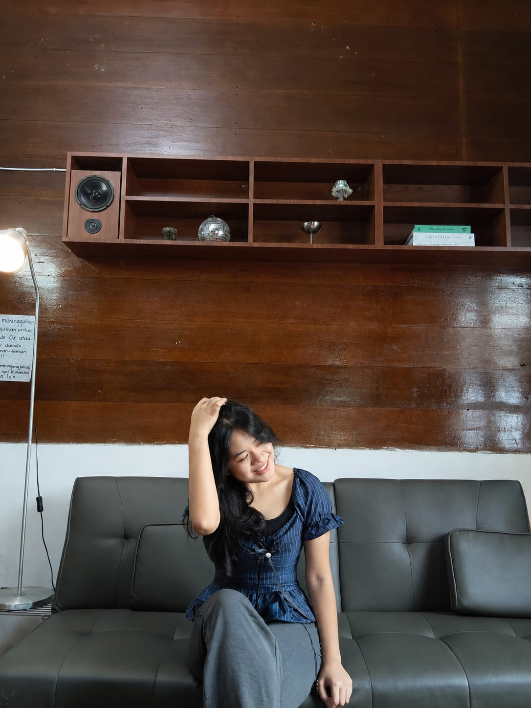

UNAI • NIM 2582008
| Nama Lengkap | : Joyce Margareth Sembiring |
| NIM | : 2582008 |
| Program Studi | : Sistem Informasi |
| Fakultas | : Teknologi Informasi (UNAI) |
Halo! My Name is Joyce Margareth Sembiring, bisa dipanggil joyii, saya lahir di Medan. Saya adalah mahasiswi Sistem Informasi di Universitas Advent Indonesia angkatan 2025 yang terletak di Bandung. Saya berada di fakultas Teknologi Informasi dan saya mengambil jurusan Sistem Informasi.
saat kecil saya tidak ada kepikiran cita cita saya masuk ke dunia per tehnologian, tapi kenapa saya bisa masuk? ya karna disuruh hehe. yaudah tinggal dijalani saja walaupun awal awalnya saya ga suka, ga seneng:). tapi Puji Tuhan sampai sekarang saya masih bisa bertahan sampai sekarang but it's okay hwaitingg
Saya berharap setelah lulus dari UNAI FTI ini, saya bisa mendapatkan pekerjaan yang sesuai dengan jurusan saya minati, dan sesuai dengan ekspetasi saya. Saya akan terus belajar, menambah pengalaman, dan mengembangkan kemampuan saya di dunia teknologi. saya juga ingin bekerja tambahan di bidang remote agar gaji saya mendapatkan gaji 2x lipat dan besar diatas UMR hehehe, Doakan saya yaa~!! Saya memiliki beberapa hobi dan minat yang membuat hidup saya lebih berwarna. Saya sangat menikmati berenang, menari, dan menyanyi. Selain itu, saya juga suka bermain sepeda dan bermain basket bersama teman-teman. Aktivitas ini tidak hanya memberikan kesenangan, tetapi juga membantu saya menjaga kesehatan fisik dan mental.
Indeks Prestasi Semester, Tahun Akademik 2025/2026
| No | Semester | Tahun Akademik | IPK / GPA |
|---|---|---|---|
| 1 | Ganjil (Semester 1) | 2025/2026 | 3.67 |
| 2 | Genap (Semester 2) | 2025/2026 | 3.57 |